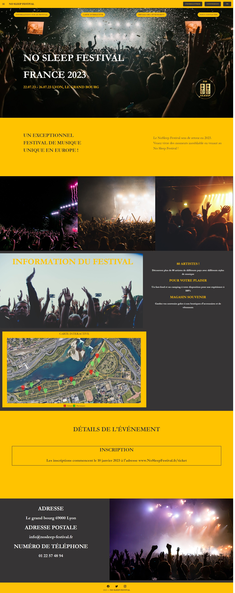
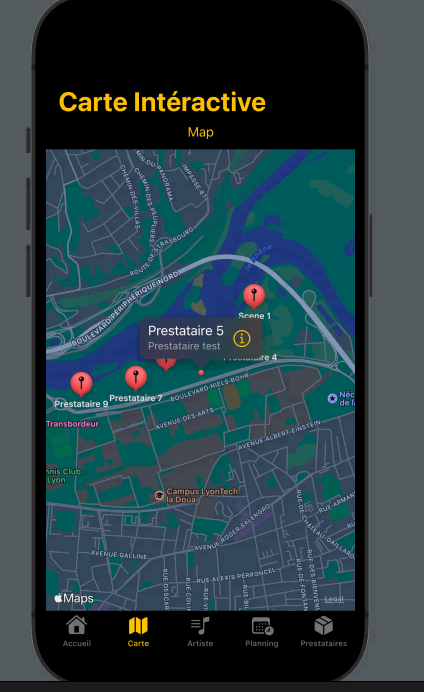

Ce projet a été réalisé dans un groupe de 4. Le but était de créer un site web d'un événement / festival.
Une version application mobile devait aussi être crée.
Je n'ai pas été impliqué dans la réalisation du projet pendant le semestre 3, mais j'ai rejoint l'équipe au semestre 4 pour contribuer à la création du site web.
Cependant, j'ai travaillé sur l'application mobile depuis sa conception jusqu'à sa finalisation.
Le site web doit etre réaliser avec le framework VueJS et l'application devait etre fait sur android ou IOS au choix.
Et pour finir nous avons présenter l'application et les progres fait sur le site web, lors d'un exposer oral.
Vous pourrez trouver une image de la page d'Accueil du site ainsi que de l'application ci-dessous.


Livrables et Documents
Mon travail
N'étant pas présent pendant la moitié de la création du site internet du fait de mon semestre au, je n'ai pas pu réaliser autant que mes camarades.
J'ai donc commencé le début de l'implémentation de la connexion sociale, ainsi que l'implémentation d'un chat en ligne pour que les utilisateurs puisent laisser des avis.
Concernant l'application mobile, nous nous sommes répartis les différentes parties de l'application, je me suis donc occupé de la carte interactive.
Compétence Obtenue
Lors de ce travail, j'ai obtenu les compétences suivantes :
- Travailler sur un projet préétabli
- Travailler sur un projet en équipe
- Développer une application web avec le framework VueJS.
- Développer une application web dynamique.
- Développer des fonctionnalités asynchrones sur une application web.
- Développer une application IOS avec Swift.
- Présenter un projet à l'oral.
Retour Reflexif
Lors de ce travail, j'ai pu beaucoup apprendre, car à l'instar de mes camarades qui avaient appris l'utilisation du framework VueJS lors du semestre 3.
J'ai donc dû apprendre comment développer au sein de ce framework, ainsi que de comprendre ce qui avait déjà été fais lors du projet.
Mes camarades ont pu m'aider pour la compréhension de ces sujets.
Je pense donc que bien que mes contributions au projet soit maigre, je suis sûrement une des personnes qui a le plus appris de notre groupe.
Page éditée par Villerot Justin